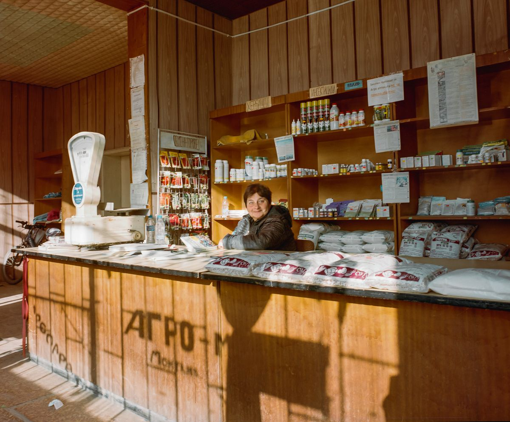
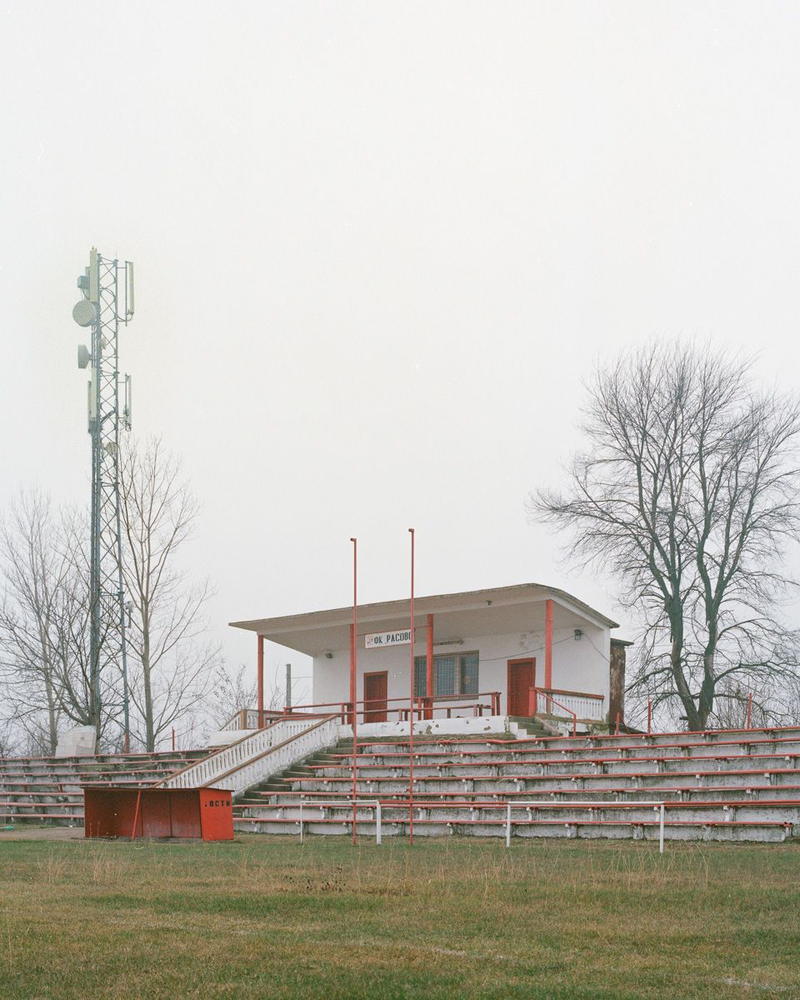
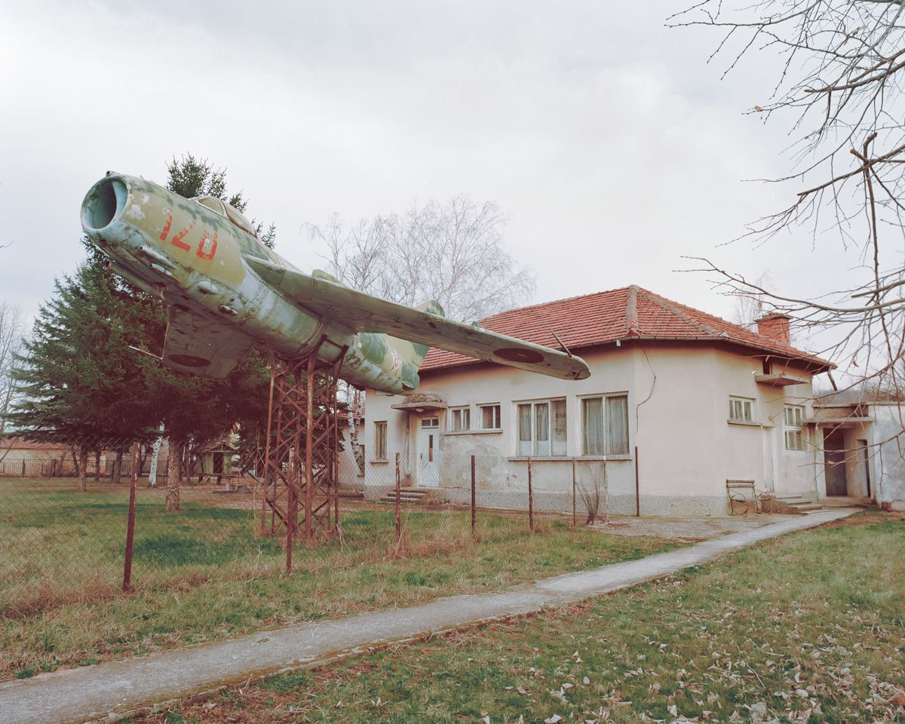
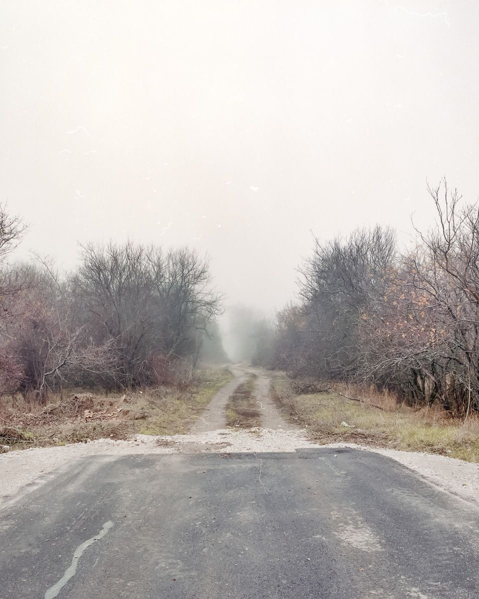
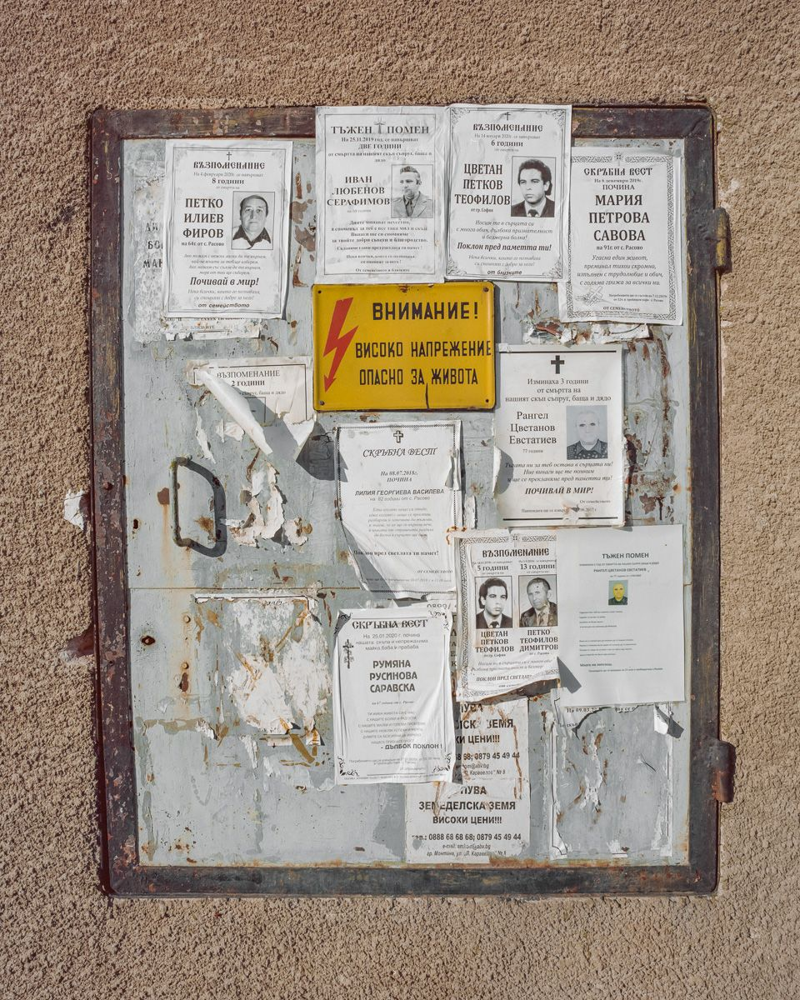
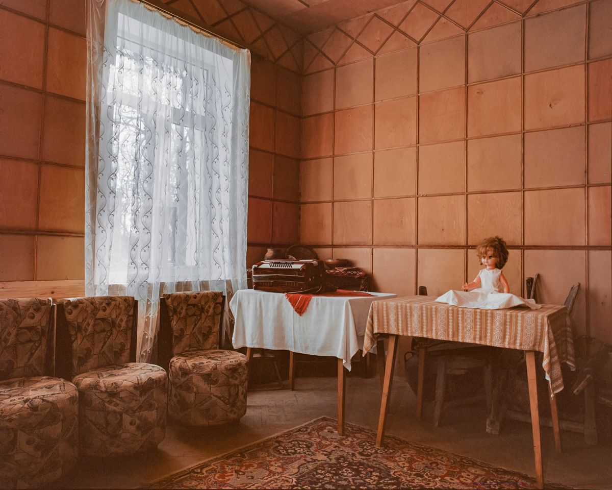
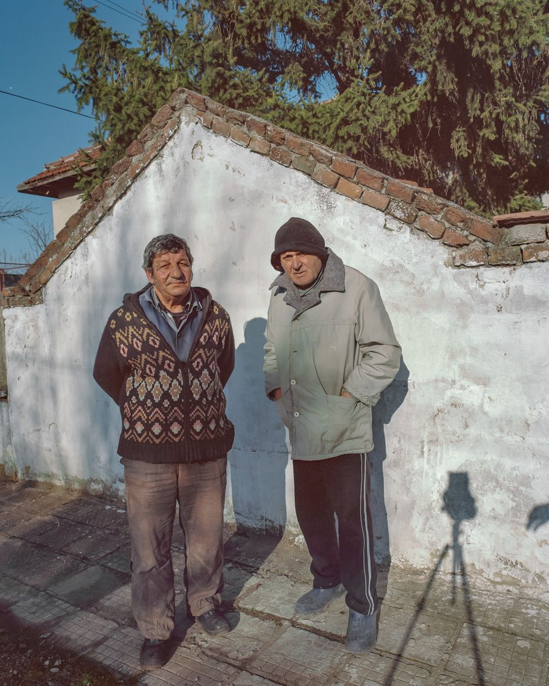
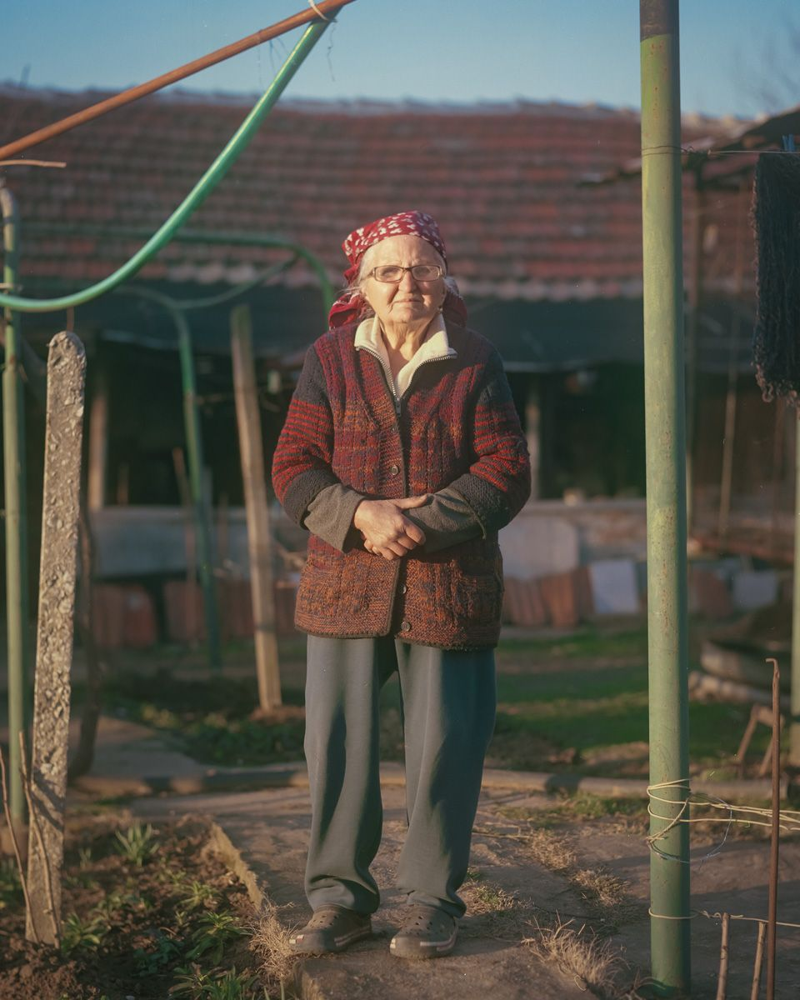
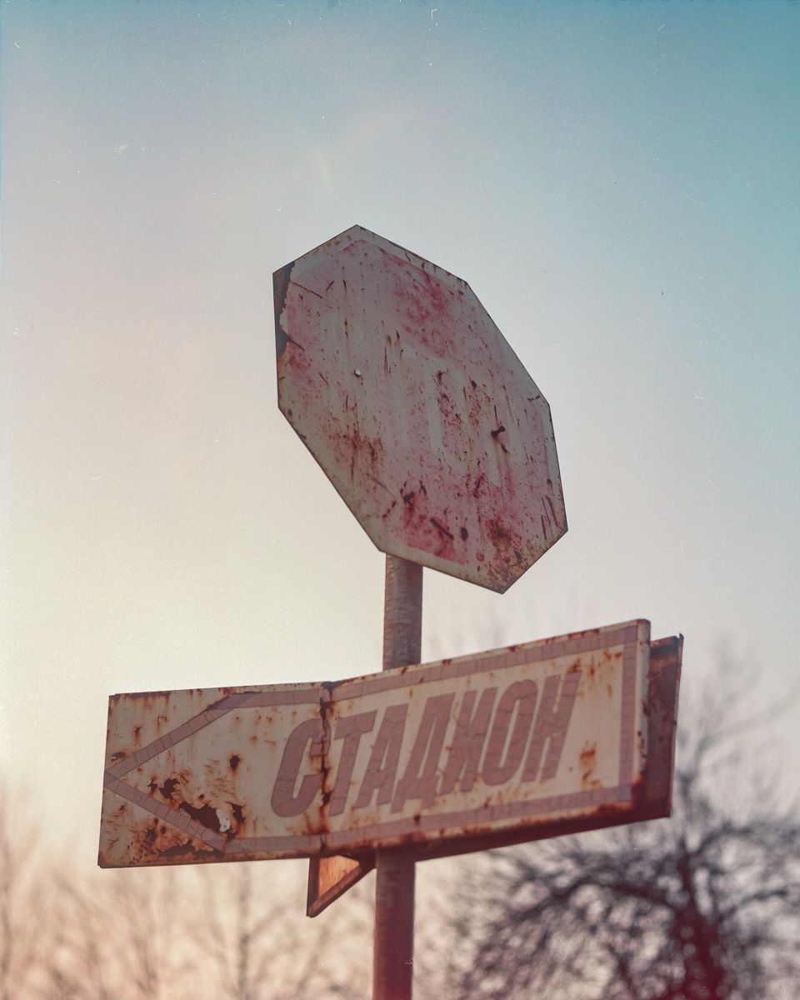
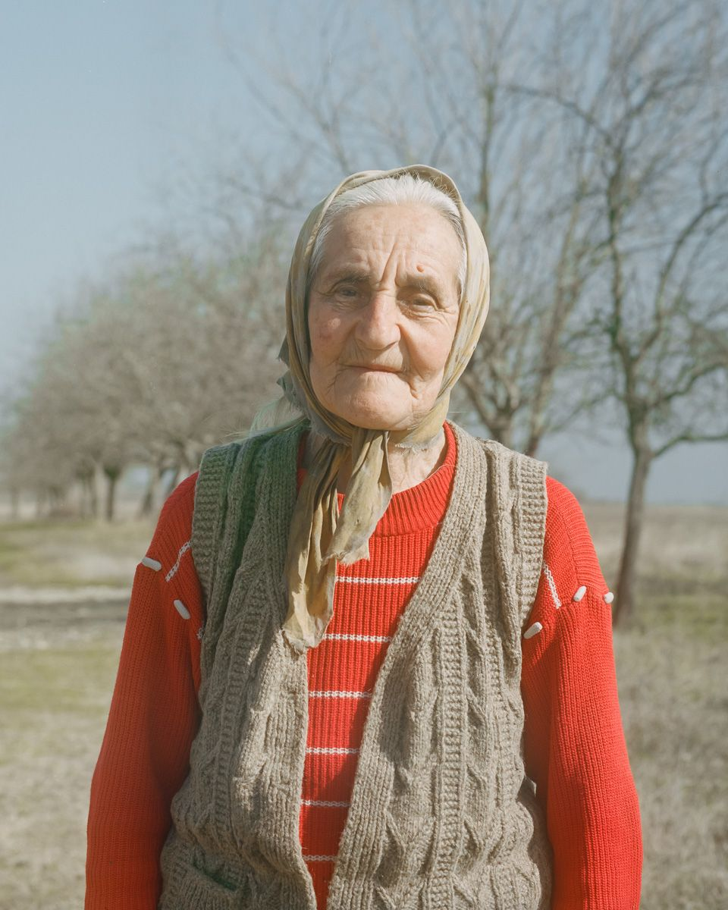

Exemplary Home is a documentary project exploring rural north-western Bulgaria — a region shaped by communism, abandoned by the post-Soviet rush to globalise, and largely overlooked by the country it belongs to. Shot on medium format film over winter and spring 2019–2020, the work won 2nd place at the International Photography Awards, 3rd at the Bulgarian Photography Awards, and was the basis of my first solo exhibition at KO-OP, Sofia.

The project began as a personal reckoning. After seven years in London, my view of Bulgaria had calcified into something distant and frustrated. The challenge was to return to the country honestly — without nostalgia, without resentment — and to find a way of representing it that didn't flatten its complexity into either lament or romance.
I worked slowly and locally. Time spent in conversation before time spent shooting. I switched from a handheld Mamiya 7 to a tripod-mounted RB67, which forced a slower, more deliberate working rhythm and changed the relationship between photographer, camera, and subject. The aim was to give the people and places I encountered the dignity of being properly seen.
The final body of work brings together environmental images, interiors, portraits, and details — sequenced to read as an extended piece of writing rather than a series of single frames. Shown across large framed prints and smaller loose photographs at KO-OP, the exhibition was designed to mirror the way memory and place actually work: layered, uneven, returned to repeatedly.










Exemplary Home set the principles the rest of the practice runs on: slowness, attention, and a personal investment that doesn't apologise for being there. The work is sharper when I'm fully in it — and I've structured the practice so I can be.